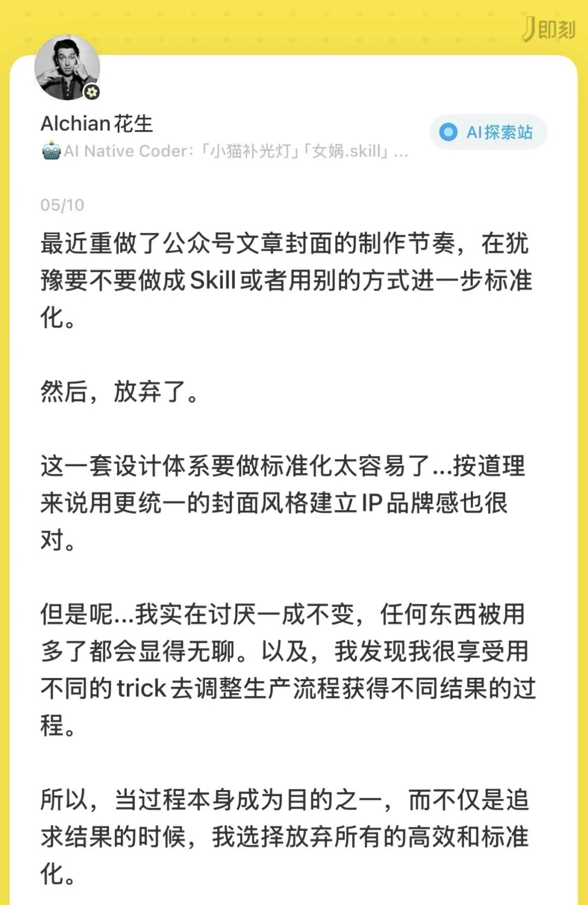
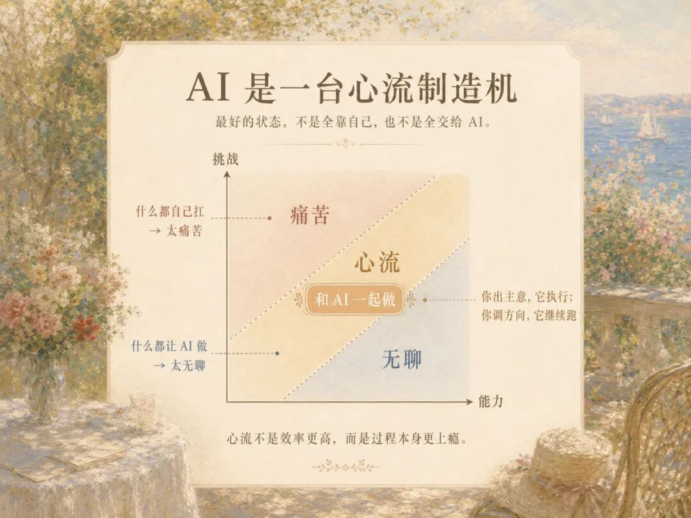
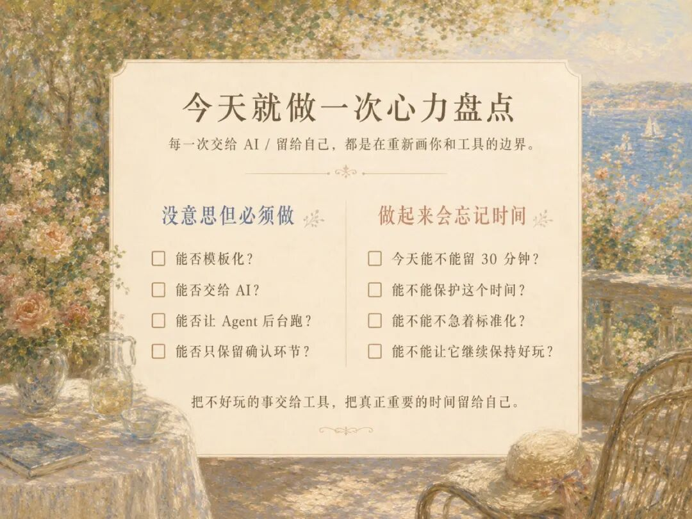

AI 不是效率工具，是心流制造机：心力配置最优化 + 主体性训练
来源：微信公众号 归档日期：2026-05-12 抓取状态：成功 原文字符：4499｜配图：6 张
摘要速览
用了很多 AI 工具但感觉自己被掏空、或者搞不清"哪些事该让 AI 做、哪些事该留给自己"——这篇给出一个清晰的判断标准和认知框架。
核心内容
- 判断标准只有一个：不是"这件事能不能 Skill 化"，而是"这件事的过程本身有没有快乐"。做完没成就感的 → 交给 AI；做的时候忘记时间、做完觉得爽的 → 留给自己
- 心力是有限资源：把心力花在不愿意做的事上，剩余时间也提不起劲。AI 帮我们剥离"必须做但不好玩"的部分，剩下的全是愿意做的事
- AI 是心流制造机：Coding agent 上瘾的本质是它把任务难度调到了甜区——你出主意、它执行、你调整方向，既费一点劲又能立刻看到反馈，持续产生心流
- 主体性警告：工具的能力越强，越容易被工具反过来定义。AI 能干的边界会悄悄成为你能干的边界。每一次"交给 AI / 留给自己"的判断，都是主体性训练
- 不是效率最大化，是心力配置最优化：目标不是做更多事，而是让更多时间花在让你进入心流的事上
可执行启发
（待补充）
我的想法
（待补充——可以思考：① 我自己有哪些任务属于"第一堆"但还没 Skill 化？列出来做一次盘点。② 心力配置最优化和 Harness Engineering 的"验证先行"有没有共同的底层逻辑——都是在说"把结构性工作前置，把创造性空间留出来"？）
为什么有用
这个框架解决了一个高频困惑：AI 这么强，我到底应该让它做多少？花叔给的答案是：用"过程有没有快乐"做切割，比"效率高不高"更本质。对长期高强度使用 AI 工具的人来说，这是防止被工具塑造的认知护栏。
具体步骤
打开待办清单，将所有任务分成两堆：
- 第一堆（做完没意思、消耗心力）：问自己能让 AI 做掉多少？Skill 化、流程化、模板化，让它在你不在场的时候自己跑完
- 第二堆（做的时候忘记时间、做完觉得爽）：问自己今天有多少时间能花在这上面？主动保护这些时间，不让第一堆偷走它
适用 / 不适用场景
- 适用：厘清自己的 AI 使用策略；防止陷入"全部 Skill 化"的自动化陷阱；长期维护心力健康的规划
- 不适用：短期项目冲刺（那时候一切以交付为目标）；对使用 AI 仍处于探索期（先多用再筛选）
原文：花叔
我是也成老登了么 最近常常在各种场合被要求给年轻人提供学AI的建议。
昨天在参加一个黑客松圆桌的时候，又面对了这样的问题。
我当时的回答其实挺简单：
把你觉得没意思的、标准化的、消耗心力的事，都想办法交给AI。 把你觉得好玩的、需要琢磨的、做完会觉得爽的事，留给自己。
听起来有点像鸡汤，但它其实是一种 非常具体的心力分配策略 。每个人每天可用的心力是有限的。你把它花在你不愿意花的事上，就没有心力花在你愿意花的事上了。
以及，我甚至对于大家没更充分地使用Coding agent感到挺疑惑（Claude Code、Codex、Cursor、Trae、OpenClaw等等都算）。这一波AI能力的爆发，最有价值的礼物之一就是它们。如果你做的事里有「自己不想做但必须做」的部分，多半都能让这些Coding agent替你跑掉。
整个上午的心力损耗几乎是零。
这种感觉特别好
这种好的点不在「效率高」。
在于我把本该花在不喜欢的事上的心力，省下来留给了我喜欢的事。
报名表、对格式、塞文档这种事，本身没什么意思，做完之后也没什么成就感。它们必须做，但它们消耗你的好心情。一天里如果你花两个小时在这种事上面，剩下的时间你也很难再有兴致做别的。 心力是真的会被耗光的。
那就让AI做。
但是，不是所有标准化的事都该Skill化
判断标准从来不是「这件事能不能Skill化」，而是「这件事的过程本身有没有快乐」。
报名材料的过程没有快乐，那就交给AI，0心力。 做封面的过程有快乐，那就留给自己，慢慢调，每篇换一种风格。
不是效率最大化，是心力配置最优化。
为什么有的事过程本身就快乐？
心流理论给了一个解释。
当一件事的难度恰好在你能力的甜区，既不容易到让你无聊，也不难到让你痛苦，并且你能立刻看到自己的努力产生反馈——你就进入心流。过程本身就让你爽。
AI编程为什么这么上瘾，本质上就是它的难度刚好被AI调到了那个甜区里。
没有AI的时候，写一个不熟的功能要查一堆文档、踩一堆坑，超出甜区，就变成痛苦了。 什么都让AI做、自己只看它跑，掉到甜区下限，变成无聊。 和AI一起做（你出主意、它执行、你调整方向、它再做），你刚好处在那个又费一点劲、又能立刻看到结果的位置。
这就是为什么很多人玩AI编程像打游戏一样停不下来。 它不是一个「效率工具」，它是一台心流制造机。
庄子《养生主》里庖丁解牛：「以神遇而不以目视，官知止而神欲行」。庖丁不是在「劳动」，他在那种状态里得到了某种自由。这其实就是中国人最早的心流定义。
但工具变强的时候，主体也容易变弱
工具的能力越强，使用工具的人就越容易被工具反过来定义。一个熟练用Excel的人，慢慢就会被自己的工作变成「Excel工人」。
AI出来之后，这个问题就被放大了。如果你不主动选择「什么交给AI、什么留给自己」， AI能干的边界，就会成为你能干的边界 。你的Skill库越完善，越有可能出现这种情况：你以为你在用AI，其实是AI在塑造你。
每一次你停下来问「这件事我想自己做，还是交给AI」，你就在做一次主体性的训练。 问得多了，你不会被任何一种工具定义。问得少了，你会被你最常用的工具悄悄定义。
给你一个具体的练习
打开你的待办清单（或者日程表），把上面的事分成两堆。
一堆是你做完会觉得「还行，做完了，但是没什么意思」的事。 一堆是你做的时候会忘记时间、做完会觉得「这玩意儿真有意思」的事。
第一堆，问自己：能让AI做掉多少？哪怕只是50%。把它Skill化、流程化、模板化，让它在你不在场的时候自己跑完就行。 第二堆，问自己：今天我有多少时间能花在这上面？保护这些时间，不要让第一堆的事再偷它。
你做的每一个「交给AI / 留给自己」的判断，都是在重新画一遍你和工具的边界，也是在重新确认你自己想成为什么样的人。
原文沉淀
目录
我是也成老登了么😢最近常常在各种场合被要求给年轻人提供学AI的建议。
昨天在参加一个黑客松圆桌的时候，又面对了这样的问题。
我当时的回答其实挺简单：
把你觉得没意思的、标准化的、消耗心力的事，都想办法交给AI。 把你觉得好玩的、需要琢磨的、做完会觉得爽的事，留给自己。
听起来有点像鸡汤，但它其实是一种非常具体的心力分配策略。每个人每天可用的心力是有限的。你把它花在你不愿意花的事上，就没有心力花在你愿意花的事上了。
所以我干脆来写一篇文章，再展开讲讲我是怎么处理自己和AI之间的关系的。
以及，我甚至对于大家没更充分地使用Coding agent感到挺疑惑（Claude Code、Codex、Cursor、Trae、OpenClaw等等都算）。这一波AI能力的爆发，最有价值的礼物之一就是它们。如果你做的事里有「自己不想做但必须做」的部分，多半都能让这些Coding agent替你跑掉。
就拿我早上来说。我刚刚做了两件挺复杂、但又不得不做的事。
但其实都不是我做的。
一个合作品牌让我做完内容之后顺手报名他们的大赛。我把报名表的字段和提交zip的要求丢给Claude Code，去吃了顿早饭。回来看了一眼，它把所有内容写完了。甚至自己调用了huashu-design这个skill，把要提交的agent产品宣传动画做了出来，打包进了zip。
另一个合作品牌问我有没有合适的skill能提交到他们的平台。我把对方的开发文档丢过去，让Claude Code自己挑了两个我已经做过的skill，按对方的规范要求重新加工了一版，打包给我。我点了下确认就发出去了。
整个上午的心力损耗几乎是零。
这种感觉特别好
这种好的点不在「效率高」。
在于我把本该花在不喜欢的事上的心力，省下来留给了我喜欢的事。
报名表、对格式、塞文档这种事，本身没什么意思，做完之后也没什么成就感。它们必须做，但它们消耗你的好心情。一天里如果你花两个小时在这种事上面，剩下的时间你也很难再有兴致做别的。心力是真的会被耗光的。
那就让AI做。
但是，不是所有标准化的事都该Skill化
昨天我发了另一条相反方向的动态。

放弃Skill化不是因为做不到，是因为我享受这件事的过程本身。
把这条动态和今天早上这件事放一起看，乍一看是矛盾的。既要把事情Skill化全自动交给AI，又不要Skill化要自己慢慢做——你到底想干嘛。
但其实它们说的是一件事：
判断标准从来不是「这件事能不能Skill化」，而是「这件事的过程本身有没有快乐」。
报名材料的过程没有快乐，那就交给AI，0心力。 做封面的过程有快乐，那就留给自己，慢慢调，每篇换一种风格。
不是效率最大化，是心力配置最优化。
为什么有的事过程本身就快乐？
心流理论给了一个解释。
当一件事的难度恰好在你能力的甜区，既不容易到让你无聊，也不难到让你痛苦，并且你能立刻看到自己的努力产生反馈。这时候你就进入心流。过程本身就让你爽。
我后来想，AI编程为什么这么上瘾，本质上就是它的难度刚好被AI调到了那个甜区里。
没有AI的时候，写一个不熟的功能要查一堆文档、踩一堆坑，超出甜区，就变成痛苦了。 什么都让AI做、自己只看它跑，掉到甜区下限，变成无聊。 和AI一起做（你出主意、它执行、你调整方向、它再做），你刚好处在那个又费一点劲、又能立刻看到结果的位置。
这就是为什么很多人玩AI编程像打游戏一样停不下来。它不是一个「效率工具」，它是一台心流制造机。

其实庄子两千多年前就描述过这个状态。《养生主》里庖丁解牛的时候「以神遇而不以目视，官知止而神欲行」。手和刀已经不需要思考介入了，注意力直接进入对象本身。庖丁不是在「劳动」，他在那种状态里得到了某种自由。
我每次看到这一段都觉得，这其实就是中国人最早的心流定义。庖丁解牛不是工作，是玩。
封面这件事对我来说也是。每次都换种风格、调种trick，它一直处在难度甜区里。如果做成Skill一键产出，反而失去了那个让我享受的过程。
但报名表不是。报名表的难度甜区只对一个完全没填过的人有意义。对填过十次的我来说，它早就掉到甜区下限，做的时候只觉得无聊，做完一点回甘都没有。
这种事，让AI做。
一天结束的时候你应该有过这种感觉——完成了一堆任务，但感觉自己被掏空。掏空你的不是任务本身，是「不想做却必须做」的那种内耗。
AI能力的这一轮爆发，让我们第一次有了重新分配心力的机会。 这件事其实挺珍贵的。
但工具变强的时候，主体也容易变弱
这里其实有个更深的问题，我想说出来。
工具的能力越强，使用工具的人就越容易被工具反过来定义。一个熟练用Excel的人，慢慢就会被自己的工作变成「Excel工人」，他干的事都是Excel能干的事，Excel不擅长的事他就不去做了。
AI出来之后，这个问题就被放大了。因为AI能干的事比Excel多太多了。如果你不主动选择「什么交给AI、什么留给自己」，AI能干的边界，就会成为你能干的边界。你的Skill库越完善，越有可能出现这种情况：你以为你在用AI，其实是AI在塑造你。
所以「不想做的事Skill化、想做的事留给自己」，这件事的意义不只是省心力。
它是一种在AI能力扩张过程中，仍然清楚知道自己想做什么的练习。
每一次你停下来问「这件事我想自己做，还是交给AI」，你就在做一次主体性的训练。问得多了，你不会被任何一种工具定义。问得少了，你会被你最常用的工具悄悄定义，直到某天发现自己变成了它的延伸。
我觉得这是这个时代最值得花心思的事情之一。
一个挺浪漫的对照
马克思在《德意志意识形态》里有一段很美的描述，写共产主义之后人的状态：
我有可能随自己的兴趣今天干这事，明天干那事，上午打猎，下午捕鱼，傍晚从事畜牧，晚饭后从事批判，但又不因此就使我成为一个猎人、渔夫、牧人或批判者。
那时候这听起来像个遥远的乌托邦。前提条件（生产力极大丰富、劳动力极大解放）每一条都看不到尽头。
但今天我用Claude Code帮我处理完一个上午的事务工作，然后腾出整个下午去研究一个新的AI产品、写一段我自己想表达的东西、调一调封面的风格。
我突然意识到，至少对一部分人，我们已经站在了那个未来的早期版本里。
不是说AI替我们解决了所有劳动。但它至少帮我们解决了「自己不愿意干但必须干」的那部分劳动。这部分一旦被剥离出去，剩下的就全是你愿意做的事。
而你愿意做的事，本质上不是「工作」，是「玩」。
两百多年前席勒在《审美教育书简》里写过一句话，我以前读觉得抽象：
人，只有当他完全是人的时候，他才游戏；只有当他游戏的时候，他才完全是人。
我每天用AI做事的时候，反而觉得这句话变得非常具体了。
给你一个具体的练习
如果你也想试着用AI重新分配自己的心力，今天可以做一件事：

打开你的待办清单（或者日程表），把上面的事分成两堆。
一堆是你做完会觉得「还行，做完了，但是没什么意思」的事。 一堆是你做的时候会忘记时间、做完会觉得「这玩意儿真有意思」的事。
第一堆，问自己：能让AI做掉多少？哪怕只是50%。把它Skill化、流程化、模板化，让它在你不在场的时候自己跑完就行。 第二堆，问自己：今天我有多少时间能花在这上面？保护这些时间，不要让第一堆的事再偷它。
这个练习看起来很小，但其实是这个时代非常关键的一件事。
你做的每一个「交给AI / 留给自己」的判断，都是在重新画一遍你和工具的边界，也是在重新确认你自己想成为什么样的人。
人生是有限的。AI替我们干掉那些「必要但不好玩」的事之后，剩下的时间用来干什么，就成了一个新问题。
我希望对你来说，这是个让你兴奋的问题。
归属：[[02-输入/按主题/认知与思维/_index|认知与思维]]